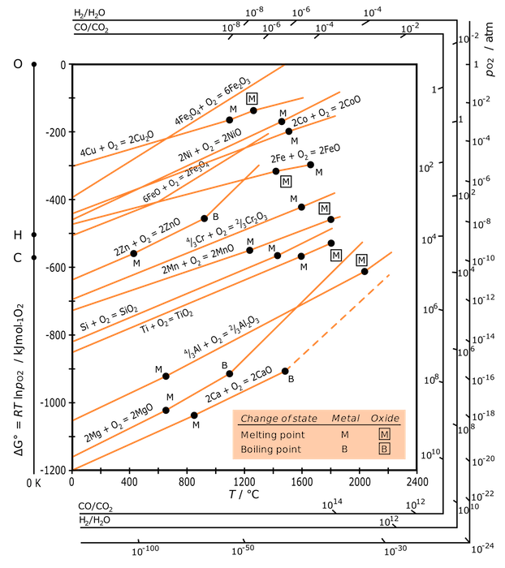

# SlideshowRun the next cell or run the command in a terminal window.Run the next cell or run the command in a terminal window.
!jupyter nbconvert Lecture-23-Ellingham-Diagrams.ipynb --to slides --post serve# Richardson-Ellingham DiagramsDan Lewis Rensselaer Polytechnic Institute Materials Research Center, MRC-110 Troy, NY 12180 Presented at: Minnowbrook Microelectronics Conference, 2016The treatment here (and examples) are taken from DeHoff's [Thermodynamics in Materials Science][dehoff].[dehoff]:https://www.amazon.com/Thermodynamics-Materials-Science-Second-Robert/dp/0849340659Dan Lewis
Rensselaer Polytechnic Institute
Materials Research Center, MRC-110
Troy, NY 12180
Presented at: Minnowbrook Microelectronics Conference, 2016
The treatment here (and examples) are taken from DeHoff's Thermodynamics in Materials Science.
Outline of the talk:* Molecules and Chemical Reactions* Reaction Equilibrium* Mass Constraints* Activity* Richardson-Ellingham Diagrams* A Computed Example* Further ThoughtsOutline of the talk:
A chemical reaction is a re-arrangement of the atoms in the system - and can be succinctly expressed thus:$$\mathrm{C} + \mathrm{O_2} = \mathrm{CO_2}$$and$$\mathrm{2H_2} + \mathrm{O_2} = \mathrm{2H_2O}$$A chemical reaction is a re-arrangement of the atoms in the system - and can be succinctly expressed thus:
and
* These are statements of mass balance (could balance charge, too).* The coefficients may be divided by a constant value without loss of generality.* One may think of these coefficients as molar quantities.The concept of degrees of freedom can be used in the study of chemical reactions. We define:* $e$ is the number of elements* $c$ is the number of components* $r$ is the number of possible reactions (degrees of freedom)$$r = c - e$$The concept of degrees of freedom can be used in the study of chemical reactions. We define:
For a system containing C and O $(e=2)$ and contains molecular species $\mathrm{O_2}$, $\mathrm{CO_2}$, and $\mathrm{CO}$ $(c=3)$ we have a single independent reaction $(r = 3 - 2 = 1)$:$$\mathrm{2CO} + \mathrm{O_2} = \mathrm{2CO_2}$$For a system containing C and O and contains molecular species , , and we have a single independent reaction :
If the system also contains $\mathrm{C}$ as a chemical component then we can write two independent reactions:$$\mathrm{C} + \mathrm{O_2} = \mathrm{CO_2}$$$$\mathrm{2C} + \mathrm{O_2} = \mathrm{2CO}$$These are referred to as _multivariant_ interacting systems.If the system also contains as a chemical component then we can write two independent reactions:
These are referred to as multivariant interacting systems.
We will now consider the thermodynamics of the following reaction:$$\mathrm{2CO} + \mathrm{O_2} = \mathrm{2CO_2}$$We will now consider the thermodynamics of the following reaction:
we can use the combined first and second law of thermodynamics:$$dU = dQ - dW$$we can use the combined first and second law of thermodynamics:
and assuming only reversible work we can make the substitutions:$$dW = PdV$$and$$dQ = TdS$$and assuming only reversible work we can make the substitutions:
and
giving$$dU = TdS - PdV$$giving
If the system is multicomponent and single phase we can write:$$dU = TdS - PdV + \sum_{k=1}^{c}{\mu_k dn_k}$$If the system is multicomponent and single phase we can write:
Explicitly in the components of our gaseous system we have:$$dS = \frac{1}{T}dU + \frac{P}{T}dV - \frac{1}{T}[\mu_{CO} dn_{CO} + \mu_{O_2} dn_{O_2} + \mu_{CO_2} dn_{CO_2}]$$Explicitly in the components of our gaseous system we have:
If the system is isolated then we may also write:$$dU = 0$$$$dV = 0$$If the system is isolated then we may also write:
Another feature of an isolated system is that no matter can cross the boundary. If the system is non-reacting then the number of molecular species is constant:$$dn_k = 0 \quad (k=1, 2, \ldots, c)$$Another feature of an isolated system is that no matter can cross the boundary. If the system is non-reacting then the number of molecular species is constant:
However, in a reacting system this is not true:$$dn_k \neq 0 \quad (k=1, 2, \ldots, c)$$However, in a reacting system this is not true:
The number of atoms _does_ remain constant:$$dm_i = 0 \quad (i=1, 2, \ldots, e)$$The number of atoms does remain constant:
Counting the total number of carbon and oxygen atoms in our hypothetical reaction:$$\mathrm{2CO} + \mathrm{O_2} = \mathrm{2CO_2}$$we get the following relations:$$m_C = n_{CO_2} + n_{CO}$$$$m_O = n_{CO} + 2n_{CO_2} + 2n_{O_2}$$Counting the total number of carbon and oxygen atoms in our hypothetical reaction:
we get the following relations:
From these expressions we enforce the constraint that:$$dm_C = dm_O = 0$$From these expressions we enforce the constraint that:
and we can derive:$$dn_{CO} = - dn_{CO_2}$$and we can derive:
and$$dn_{O_2} = - \frac{1}{2}dn_{CO_2}$$and
This is a statement (similar to a network constraint) that the number of moles for only one comoponent may be varied independently.This is a statement (similar to a network constraint) that the number of moles for only one comoponent may be varied independently.
Revisiting our combined first and second law for an isolated system we now arrive at:$$dS_{iso} = \frac{1}{T}(0) + \frac{P}{T}(0) - \frac{1}{T} \left[\mu_{CO} dn_{CO} + \mu_{O_2} dn_{O_2} + \mu_{CO_2} dn_{CO_2} \right]$$Revisiting our combined first and second law for an isolated system we now arrive at:
we can now substitute our network constraints above:$$dS_{iso} = \frac{1}{T}(0) + \frac{P}{T}(0) - \frac{1}{T} \left[ \mu_{CO} (- dn_{CO_2}) + \mu_{O_2} \left(- \frac{1}{2}dn_{CO_2} \right) + \mu_{CO_2} dn_{CO_2} \right] $$we can now substitute our network constraints above:
simplifying:$$dS_{iso} = \frac{1}{T}(0) + \frac{P}{T}(0) - \frac{1}{T} \left[ \mu_{CO_2} - \left( \mu_{CO} + \frac{1}{2} \mu_{O_2} \right) \right] dn_{CO_2} $$simplifying:
The terms in the brackets (the chemical potentials of the product minus the chemical potential of the reactants) is known as the affinity of the reaction:$$\mathcal{A} = \left[ \mu_{CO_2} - \left( \mu_{CO} + \frac{1}{2} \mu_{O_2} \right) \right]$$The terms in the brackets (the chemical potentials of the product minus the chemical potential of the reactants) is known as the affinity of the reaction:
In our shorthand notation we have:$$dS_{iso} = -\frac{1}{T} \, \mathcal{A} \, dn_{CO_2}$$In our shorthand notation we have:
Equilibrium conditions dictate a maximum in entropy with changes in the number of moles of $\mathrm{CO_2}$ therefore the equilibrium condition is:$$\mathcal{A} = 0$$Equilibrium conditions dictate a maximum in entropy with changes in the number of moles of therefore the equilibrium condition is:
Therefore we can inspect the affinity of the reacting system (based on the instantaneous number of moles) and identify the following conditions:$$\begin{eqnarray}\mathcal{A} &>& 0, \quad \textrm{products decompose}\\\mathcal{A} &=& 0, \quad \textrm{equilibrium}\\\mathcal{A} &<& 0, \quad \textrm{products form}\\\end{eqnarray}$$and in general the affinity can be remembered as:$$\mathcal{A} = \mu_{\textrm{products}} - \mu_{\textrm{reactants}}$$Therefore we can inspect the affinity of the reacting system (based on the instantaneous number of moles) and identify the following conditions:
and in general the affinity can be remembered as:
We can write, for any general chemical reaction:$$l L + m M = r R + s S$$$$\mathcal{A} = (r \mu_R + s \mu_S) - (l \mu_L + m \mu_M)$$We can write, for any general chemical reaction:
It is not practical to measure the chemical potential of a substance. Instead the idea of "activity" is used. We define the following:$$\mu_k - \mu^\circ_k = \Delta \mu_k \equiv RT \ln a_k$$It is not practical to measure the chemical potential of a substance. Instead the idea of "activity" is used. We define the following:
and in an ideal solution:$$a_k = X_k$$(this makes it a little clearer what the idea of "activity" really is)and in an ideal solution:
(this makes it a little clearer what the idea of "activity" really is)
If the solution is non-ideal we can define the activity like this:$$a_k = \gamma_k X_k$$further clarifying the concept of activity. The activity is a way of capturing the idea that a component "acts as if" a certain amount was present relative to an ideal solution (situation).If the solution is non-ideal we can define the activity like this:
further clarifying the concept of activity. The activity is a way of capturing the idea that a component "acts as if" a certain amount was present relative to an ideal solution (situation).
Using:$$dG' = -S'dT + V'dP + \mu dn$$and$$G' = nG$$it can be demonstrated that the Gibbs free energy per mol (the molar Gibbs energy) is identical to the chemical potential:$$\mu = G$$in a unary system.Using:
and
it can be demonstrated that the Gibbs free energy per mol (the molar Gibbs energy) is identical to the chemical potential:
in a unary system.
Using our definition of activity:$$\mu_k = \mu_k^\circ + RT \ln a_k = G_k^\circ + RT \ln a_k$$where $G^\circ$ is the Gibbs free energy per mol of component $k$ in the standard/reference state. This is generally referred to as the _the standard Gibbs free energy change_. Using the notation from our generalized chemical reaction.$$\Delta G^\circ \equiv \left[ (r G^\circ_R + s G^\circ_S) - (l G^\circ_L + m G^\circ_M) \right]$$Using our definition of activity:
where is the Gibbs free energy per mol of component in the standard/reference state. This is generally referred to as the the standard Gibbs free energy change. Using the notation from our generalized chemical reaction.
Using:$$\mu_k = \mu_k^\circ + RT \ln a_k = G_k^\circ + RT \ln a_k$$and recalling that:$$\mathcal{A} = (r \mu_R + s \mu_S) - (l \mu_L + m \mu_M)$$We get:$$\mathcal{A} = \Delta G^\circ + RT \ln \frac{a^r_R a^s_S}{a^l_L a^m_M}$$Using:
and recalling that:
We get:
Our affinity is now defined as follows, in general:$$\mathcal{A} = \Delta G^\circ + RT \ln Q$$where Q is:$$Q \equiv \frac{a^r_R a^s_S}{a^l_L a^m_M}$$and at equilibrium:$$K \equiv Q_{\mathrm{equil.}} = \left[ \frac{a^r_R a^s_S}{a^l_L a^m_M} \right]_{\mathrm{equil}}$$with$$\mathcal{A} = 0 = \Delta G^\circ + RT \ln K$$Our affinity is now defined as follows, in general:
where Q is:
and at equilibrium:
with
Further extending the ideas:$$\begin{eqnarray}{Q/K} &>& 1, \quad \textrm{products decompose}\\{Q/K} &=& 1, \quad \textrm{equilibrium}\\{Q/K} &<& 1, \quad \textrm{products form}\\\end{eqnarray}$$Further extending the ideas:
A gas mixture at 1 atm total pressure and at the temperature 700C has the following composition:|Component|H$_2$|O$_2$|H$_2$O||------|------|------|------||Mole Fraction |0.01 |0.03 |0.96|A gas mixture at 1 atm total pressure and at the temperature 700C has the following composition:
| Component | H | O | HO |
|---|---|---|---|
| Mole Fraction | 0.01 | 0.03 | 0.96 |
$\require{mhchem}$ The single reaction ($c - e = 3 - 2 = 1$) reaction for our system is:$$\ce{2H2 + O2 = H2O}$$The single reaction () reaction for our system is:
At 700C the standard Gibbs free energy change for the reaction is:$$\Delta G^\circ = -440 \mathrm{kJ}$$At 700C the standard Gibbs free energy change for the reaction is:
We compute K (the equilibrium constant) as follows:We compute K (the equilibrium constant) as follows:
$K = \exp{(- \Delta G^\circ / RT)}$
import numpy as npgibbsChange = -440000gasConst = 8.314temp = 700+273kConst = np.exp(-gibbsChange/(gasConst*temp))kConstWe compute Q (proper quotient of activities - i.e. not at equilibrium) with:$$Q = \frac{a^2_{H_2O}}{a^2_{H_2} a_{O_2}}$$We compute Q (proper quotient of activities - i.e. not at equilibrium) with:
activityWater = 0.96activityHydrogen = 0.01activityOxygen = 0.03properQuotient = activityWater**2/(activityHydrogen**2*activityOxygen)properQuotientproperQuotient/kConstThis number is much less than one, meaning that there is a strong tendency for products to form from this system in the current state.This number is much less than one, meaning that there is a strong tendency for products to form from this system in the current state.
# Multicomponent, Multiphase, and Chemical Reactions Consider the oxidation of copper. There are three phases and (correspondingly) three components in this system:* metallic copper ($\alpha$)* the gas phase ($\mathrm{g}$)* a ceramic oxide, $\mathrm{Cu_2O}$ ($\epsilon$)Consider the oxidation of copper. There are three phases and (correspondingly) three components in this system:
At equilibrium the three phases are solutions:* some oxygen will dissolve in Cu* some Cu will evaporate into the gas phase* the oxide phase will be non-stoichiometric* in the gas phase there may be monatomic oxygen and ozone* etc.At equilibrium the three phases are solutions:
_In most practical applications_ we consider many fewer components than may be truly present. We can eliminate components from consideration if we have independent observation that molar quantitites are negligable. This makes the problem tractable with simple calculations (however some advanced thermodynamic software packages are already equipped to deal with many more components, the limitation is knowing what components have high activties).In most practical applications we consider many fewer components than may be truly present. We can eliminate components from consideration if we have independent observation that molar quantitites are negligable. This makes the problem tractable with simple calculations (however some advanced thermodynamic software packages are already equipped to deal with many more components, the limitation is knowing what components have high activties).
To proceed here, we assume only three components and two atomic species, leaving only one chemical reaction.$$\require{mhchem}\ce{Cu(\alpha) + \frac{1}{2}O2(g) = CuO(\epsilon)}$$To proceed here, we assume only three components and two atomic species, leaving only one chemical reaction.
Proceeding as before:$$\mathcal{A}_{CuO} = \mu_{CuO}^{\epsilon} - \left(\mu_{Cu}^{\alpha} + \frac{1}{2}\mu_{O_2}^{g} \right)$$Equilibrium is when $\mathcal{A} = 0$ leading us to the following statement:$$\Delta G^\circ_{CuO} = - RT \ln K_{CuO}$$Proceeding as before:
Equilibrium is when leading us to the following statement:
With $$\Delta G^\circ_{CuO} = G_{CuO}^{\circ} - \left(G_{Cu}^{\circ} + \frac{1}{2}G_{O_2}^{\circ} \right)$$and$$K_{CuO} = \frac{a_{CuO}}{a_{Cu} a_{O_2}^{1/2}}$$With
and
# An Example for the Oxidation of Cu (DeHoff 11.4) Find the partial pressure of oxygen that exists in a system in which pure copper is equilibrated with $\mathrm{CuO}$ at 900C. The standard free energy for the formation of CuO from copper and oxygen at 900C is:$$\Delta G^\circ_{900} = - 52.7 \mathrm{kJ}$$Find the partial pressure of oxygen that exists in a system in which pure copper is equilibrated with at 900C. The standard free energy for the formation of CuO from copper and oxygen at 900C is:
$K = \exp{- \Delta G^\circ / RT}$
import numpy as npgibbsChange = -52700gasConst = 8.314temp = 900+273kConst = np.exp(-gibbsChange/(gasConst*temp))kConstNow that we know the equilibrium constant we can continue by computing the proper quotient of activities. We can _assume_ that the components are pure and stiochiometric. This leads us to define the activities of the components as follows:$$a_{Cu} = 1$$$$a_{CuO} = 1$$The expression for equilibrium is therefore:$$K_{CuO} = \frac{a_{CuO}}{a_{Cu} a_{O_2}^{1/2}} = \frac{1}{P_{O_2}^{1/2}} = 220$$solving for the pressure of oxygen we get:Now that we know the equilibrium constant we can continue by computing the proper quotient of activities. We can assume that the components are pure and stiochiometric. This leads us to define the activities of the components as follows:
The expression for equilibrium is therefore:
solving for the pressure of oxygen we get:
kConstpressureOfOxygen = (1.0/kConst)**2pressureOfOxygenThis means that an equilibrium is established between copper, oxygen and its oxide at 900C when the partial pressure of oxygen is $2.0 \times 10^{-5}$ atm.This means that an equilibrium is established between copper, oxygen and its oxide at 900C when the partial pressure of oxygen is atm.
The important calculation in the case of condensed phases (keeping in mind all of the previous assumptions) in equilibrium with a gas phase is the equilibrium constant.This is computed from knowledge of the standard Gibbs free energy changes for the reaction.The important calculation in the case of condensed phases (keeping in mind all of the previous assumptions) in equilibrium with a gas phase is the equilibrium constant.
This is computed from knowledge of the standard Gibbs free energy changes for the reaction.
The standard Gibbs free energy change is defined as:$$\Delta G^\circ = \Delta H^\circ - T \Delta S^\circ$$The standard Gibbs free energy change is defined as:
Where the standard enthalpy and entropy changes at any temperature can be computed from the integrals:$$\Delta H^\circ(T) = \Delta H^\circ(T_0) + \int^{T}_{T_0} \Delta C^{0}_{P}(T) dT$$Where the standard enthalpy and entropy changes at any temperature can be computed from the integrals:
and$$\Delta S^\circ(T) = \Delta S^\circ(T_0) + \int^{T}_{T_0} \frac{\Delta C^{0}_{P}(T)}{T} dT$$and
Under most circumstances the integral quantities are small enough to be neglected. Therefore most standard state free energy change curves can be safely approximated as straight lines. So it is possible then to collect all of this information on one chart. Questions such as:* Which metal more likely to oxidize, Cu or Zn at a pressure of $10^{6}$ atmospheres?* What is the minimum partial pressure of oxygen needed to make a titanium oxide stable?Under most circumstances the integral quantities are small enough to be neglected. Therefore most standard state free energy change curves can be safely approximated as straight lines. So it is possible then to collect all of this information on one chart. Questions such as:


Each line on the R-E diagram has a slope proportional to the entropy change associated with the reaction and an intercept at zero temperature equal to the standard enthalpy of formation. Note that the differences between the entropies of the solid phases do exist but are small. The main driver is the consumption of one mol of the gas phases for each mol of species forming in the chemical reaction.Each line on the R-E diagram has a slope proportional to the entropy change associated with the reaction and an intercept at zero temperature equal to the standard enthalpy of formation. Note that the differences between the entropies of the solid phases do exist but are small. The main driver is the consumption of one mol of the gas phases for each mol of species forming in the chemical reaction.
Note the following: $\require{mhchem}$* The entropy change in the CO2 reaction ($\ce{C + O2=CO2}$) is almost zero. (one mol formed per mol consumed)* The entropy change in the CO reaction ($\ce{2C + O2 = 2CO}$) is negative. (two mols of gas formed from one more of oxygen)Note the following:
Each reaction is written on the basis of one mol of oxygen consumed. For an oxide with the formula $M_uO_v$ we can write the following three expressions:Each reaction is written on the basis of one mol of oxygen consumed. For an oxide with the formula we can write the following three expressions:
$$\frac{2u}{v}M + O_2 = \frac{2}{v} M_u O_v$$$$K = \frac{a_{M_uO_v}^{(2/v)}}{a_{M}^{(2u/v)} P_{O_2}}$$$$K = \frac{1}{P_{O_2}}$$This pressure of oxygen can be thought of as the dissociation pressure - it represents the limit of stability of the oxide in equilibrium with the metal. If the oxygen pressure drops below this value - the metal is stable. If above - the oxide is stable.This pressure of oxygen can be thought of as the dissociation pressure - it represents the limit of stability of the oxide in equilibrium with the metal. If the oxygen pressure drops below this value - the metal is stable. If above - the oxide is stable.
There is no statement of kinetics (e.g. stainless steels).There is no statement of kinetics (e.g. stainless steels).
Other scales on the chart are useful. Rearranging our expression for the standard free energy change:$$\Delta G^\circ = (-R \ln K) T$$The locus of points that share a common K is a straight line through the origin. This means that we can use:$$P_{O_2} = \frac{1}{K}$$to construct a scale of partial pressures along the outer edge of the diagram. You can see this on both charts up above.A single example is below.Other scales on the chart are useful. Rearranging our expression for the standard free energy change:
The locus of points that share a common K is a straight line through the origin. This means that we can use:
to construct a scale of partial pressures along the outer edge of the diagram. You can see this on both charts up above.
A single example is below.
# Using the Richardson-Ellingham DiagramAn example R-E diagram is presented below.An example R-E diagram is presented below.

The standard Gibbs free energy change at 700C is given by point B. The corresponding oxygen potential at equilibrium is given at point C.If the oxygen potential in a system was higher, say at point E on the chart, we could write the following:$$\mathcal{A} = RT \ln \frac{(\mathrm{P_{O_2}})_{equil}}{(\mathrm{P_{O_2}})_E} = \mathrm{B} - \mathrm{D}$$The standard Gibbs free energy change at 700C is given by point B. The corresponding oxygen potential at equilibrium is given at point C.
If the oxygen potential in a system was higher, say at point E on the chart, we could write the following:
The affinity for the reaction tells us that the products are preferred. So in agreement with our intuition, the increase in the oxygen partial pressure (above the dissasociation pressure) will result in the products of the reaction being formed.The affinity for the reaction tells us that the products are preferred. So in agreement with our intuition, the increase in the oxygen partial pressure (above the dissasociation pressure) will result in the products of the reaction being formed.
%matplotlib inlinefrom ipywidgets import interact, fixedimport numpy as npimport matplotlib.pyplot as pltx
def standardGibbsChangeSolid(temperature): return (-907100 + 175*temperature)def standardGibbsSolveTemperature(equilibriumK): gasConstant = 8.314 return round((907100)/(gasConstant*np.log(equilibriumK)+175),1) def standardGibbsOxygenPressure(pressure, temperature): return (-8.314*np.log(1.0/pressure)*temperature)def makeEllinghamDiagram(pressureExponent, temperature): # Computations for the diagram. pressure = 10.0**pressureExponent gasConstant = 8.314 equilibriumK = 1.0/pressure equilibriumTemperature = standardGibbsSolveTemperature(equilibriumK) # The actual lines as ufuncs. tempLimits = np.linspace(0,2230,20) oxide = standardGibbsChangeSolid(tempLimits) atmosphere = standardGibbsOxygenPressure(pressure, temperature) # Creating the figure. fig = plt.figure(figsize=(7,9)) axes = fig.add_axes([0.1, 0.1, 0.8, 0.8]) # left, bottom, width, height (range 0 to 1) # Labeling the figure. axes.set_ylabel(r'$\Delta G^\circ (J)$') axes.set_xlabel(r'T$^\circ$C') axes.set_title('Richardson-Ellingham Diagram') # Plotting the data. axes.plot(tempLimits, oxide, 'r', label='Oxide', linewidth=2) axes.plot(temperature, atmosphere, 'g--', label='Atmosphere') # Plot annotations. annotationX = 1200 annotationY = -1700000 annotationOffset = -70000 axes.axvline(x=equilibriumTemperature, ymin=2E6, ymax=0, label='Equilibrium Temperature') axes.text(annotationX, annotationY, r'$\mathrm{Si + O_2 = SiO_2}$', fontsize=15) axes.text(annotationX, annotationY+annotationOffset, r'$P_{O_2} = 10^{'+str(pressureExponent)+'}\, \mathrm{atm}$', fontsize=15) axes.text(annotationX, annotationY+2*annotationOffset, '$T_{equil} = '+str(equilibriumTemperature-273.15)+' \mathrm{C}$', fontsize=15) # Plot options. axes.legend() axes.grid(True) axes.set_xlim(0,3000) axes.set_ylim(-2E6,0) returntemperature = np.linspace(0,3000,20)interact(makeEllinghamDiagram, pressureExponent=(-200,0,1), temperature=fixed(temperature));![]()
Type Markdown and LaTeX:
Type Markdown and LaTeX:
Type Markdown and LaTeX: